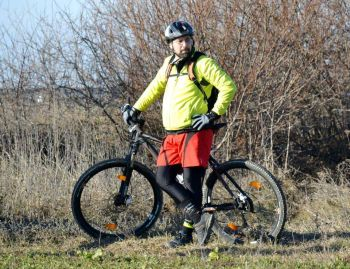

Cristi Airinei
Cristi Airinei a intrat in Tabere cu Suflet in decembrie 2013, solicitandu-ne sprijinul. Iata cererea sa:
"Un imprumut bancar nefericit, facut in tinerente in incercarea de a incepe o afacere m-a dus in popriri salariale care ma dau peste cap. Mai mult, sotia nu are un loc de munca inca din aprilie 2013, cu slabe sperante de a gasi ceva.
Nu cer nimic, ceea ce vreau sa te rog, in functie de planurile si de actiunile pe care le ai anul viitor, sa incerci sa ma implici ca voluntar sau poate ca ajutor. Imi doresc sa gasesc un extra castig, care sa imbine ceea ce imi place sa fac, mersul pe bicla si activitati outdoor, cu un mic impuls financiar care sa ma ajute sa ies din impas"
A fost primit in Echipa Tabere cu Suflet, din care a facut parte in perioada aprilie 2014 - mai 2015, perioada in care a fost ajutat financiar prin programele Ajutor pentru o Luma mai Buna si Sprijin pentru Voluntari.
Activitate in Tabere cu Suflet: Apr 2014 - Mai 2015
Caracterizare in 3 cuvinte: calculat, atent la detalii, dornic de aventura.
Sporturi practicate: ciclism, role
Primele 3 pasiuni (cum se impaca una cu alta): Mountain biking, camping, drumetii montane. Atata timp cat fac ce-mi place, pasiunile mele devin compatibile.
Obiective pentru urmatorii 5 ani: Veloture, activitati outdoor
Performante cu care te mandresti: Participarea si trecerea liniei de finish la un maraton MTB, 52 km, 2,000 m diferenta de nivel.
Maine pleci intr-o calatorie in jurul lumii. Pe cine alegi de coechipier ?
Juniorul meu, asa vom petrece mai mult timp impreuna...
Mancarea / bautura preferata
Carne, bere.
Cadoul preferat ( sa il faci / sa il primesti)
Sa ofer si sa surprind! Ce sa primesc....zambete!
Ce reprezinta Tabere Cu Suflet ptr tine?
O oportunitate de a-mi alimenta pasiunea.
"Ca orice copil al epocii de aur am avut bicla pe la 10 ani, evident un Pegas. Am facut cu ea toate nebuniile, alergand printre blocurile in constructie. La prima participare la un concurs, Daciada la Palatul Copiilor, m-a lasat frana in timpul probelor si m-am facut de toata jena.
Nu m-am mai urcat pe bicla pana la 34 ani, cand stateam in Timisoara si am inceput sa frecventez Padurea Verde. Microbul pedalatului prin padure m-a prins iremediabil:)
Cam asa a inceput pasiunea asta pentru 2 roti, pentru libertatea oferita de o plimbare prin padure, pentru urcari pe munte, pentru efortul depus la un concurs si placerea trecerii liniei de finish."